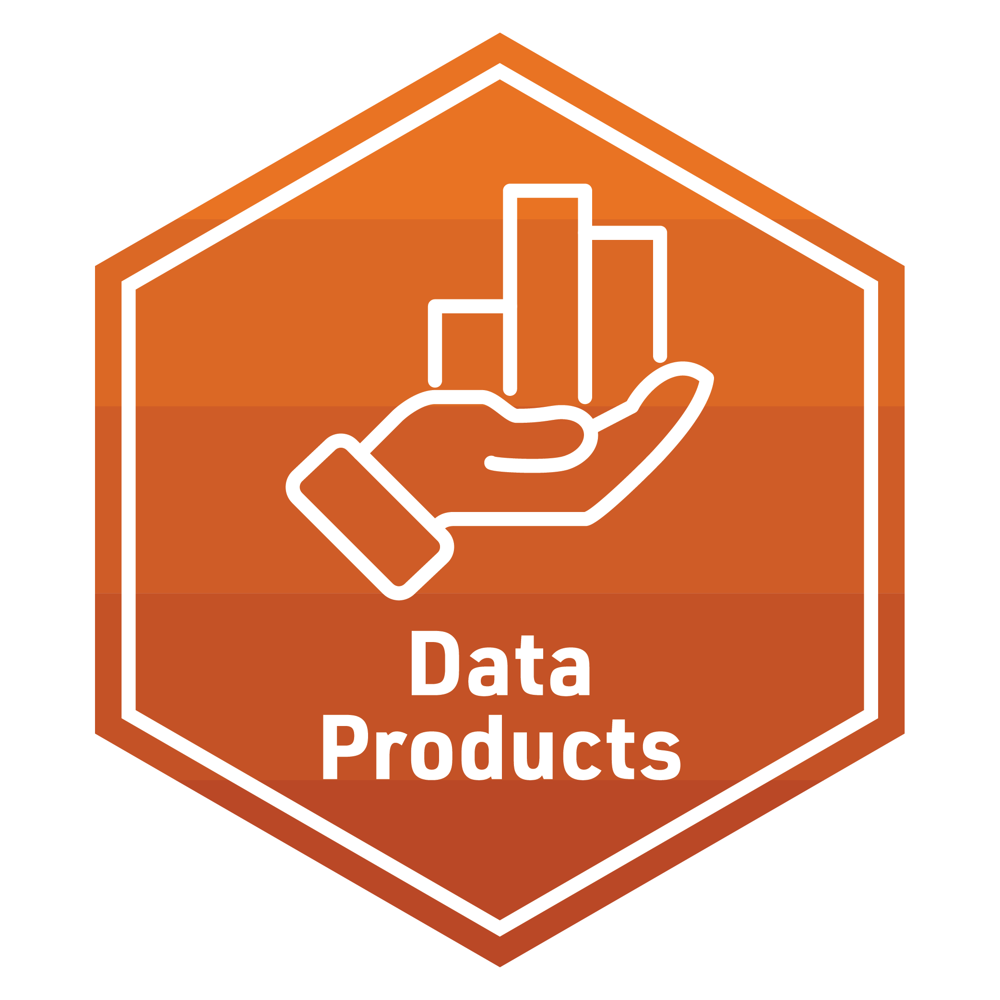

Data Products - Badge - KEY
LASER Institute Foundation Learning Badge 4 - KEY

The final activity for each learning lab provides space to work with data and to reflect on how the concepts and techniques introduced in each lab might apply to your own research.
To earn a badge for each lab, you are required to respond to a set of prompts for two parts:
In Part I, you will reflect on your understanding of key concepts and begin to think about potential next steps for your own study.
In Part II, you will complete a few R exercises that demonstrates your ability to apply the first phases of the LA workflow and data wrangling techniques introduced in this learning lab.
Part I: Reflect and Plan
Use the institutional library (e.g. NCSU Library), Google Scholar or search engine to locate a research article, presentation, or resource that applies learning analytics analysis to an educational context or topic of interest. More specifically, locate a study that makes use of the Learning Analytics Workflow we learned today. You are also welcome to select one of your research papers.
Provide an APA citation for your selected study.
What educational issue, “problem of practice,” and/or questions were addressed?
Briefly describe any steps of the data-intensive research workflow that detailed in your article or presentation.
What were the key findings or conclusions? What value, if any, might education practitioners find in these results?
Finally, how, if at at, were educators in your self-selected article involved prior to wrangling and analysis?
Draft a new research question of guided by the the phases of the Learning Analytics Workflow. Or use one of your current research questions.
What educational issue, “problem of practice,” and/or questions is addressed??
Briefly describe any steps of the data-intensive research workflow that can be detailed in your article or presentation.
How, if at all, will your article touch upon the application(s) of LA to “understand and improve learning and the contexts in which learning occurs?”
Part II: Data Product
In our Learning Analytics code-along, we scratched the surface on the number of ways that we can wrangle the data.
Using one of the data sets provided in the data folder, your goal for this lab is to extend the Learning Analytics Workflow from our code-along by preparing and wrangling different data.